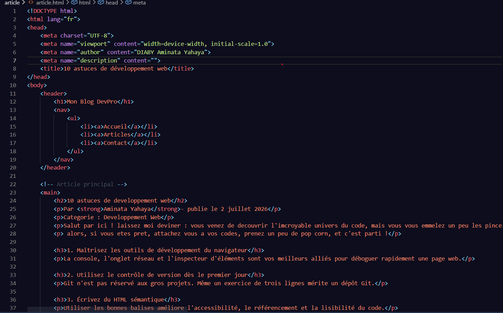

Espoir LOEMBA 1 juillet 2026
Super article, mais pas assez detaille a mon gout.
Par Aminata Yahaya- publie le 2 juillet 2026
Categorie : Developpement Web
Salut par ici ! laissez moi deviner : vous venez de decouvrir l'imcroyable univers du code, mais vous vous emmelez un peu les pinceaux 😅, pas de panique ! que vous soyez un debutant ou simplement quelau'un qui cherche a progresser plus rapidement, je vous presente la dix astuces qui m'ont fait gagner un temps précieux au quotidien en tant que développeuse, et que j'aurais aime connaitre des le debut.
alors, si vous etes pret, attachez vous a vos codes, prenez un peu de pop corn, et c'est parti !
La console, l'onglet réseau et l'inspecteur d'éléments sont vos meilleurs alliés pour déboguer rapidement une page web.
Git n'est pas réservé aux gros projets. Même un exercice de trois lignes mérite un dépôt Git.
"Git ne sauve pas seulement votre code, il sauve votre historique."
Utiliser les bonnes balises améliore l'accessibilité, le référencement et la lisibilité du code.

Un site qui fonctionne parfaitement sur Chrome peut se comporter différemment sur Firefox ou Safari.
Savoir chercher et comprendre une documentation officielle est une compétence aussi précieuse que savoir coder.
| Technologie | Niveau | Temps estime |
|---|---|---|
| HTML | Debutant | 1 semaine |
| CSS | Debutant | 2 semaine |
| JavaScript | Intermediaire | 2 mois |
| Git | Debutant | 3 jours |
La régularité bat l'intensité : coder un peu chaque jour ancre mieux les connaissances qu'une session marathon hebdomadaire.
Échanger avec d'autres développeurs accélère l'apprentissage et évite de rester bloqué seul sur un problème.
Revenir sur un ancien projet permet de mesurer sa progression et de repérer de mauvaises habitudes.
Un site accessible profite à tous les utilisateurs, pas seulement à ceux qui ont un handicap.
Choisissez des projets qui vous motivent : c'est le meilleur moyen de rester engagé sur le long terme.
Espoir LOEMBA 1 juillet 2026
Super article, mais pas assez detaille a mon gout.
Victor Hugo - 2 juillet 1992
Merci beaucoup, le point sur Git dès le début m'a beaucoup parlé !